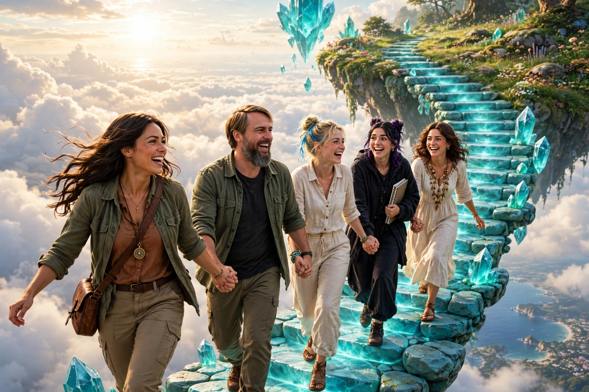
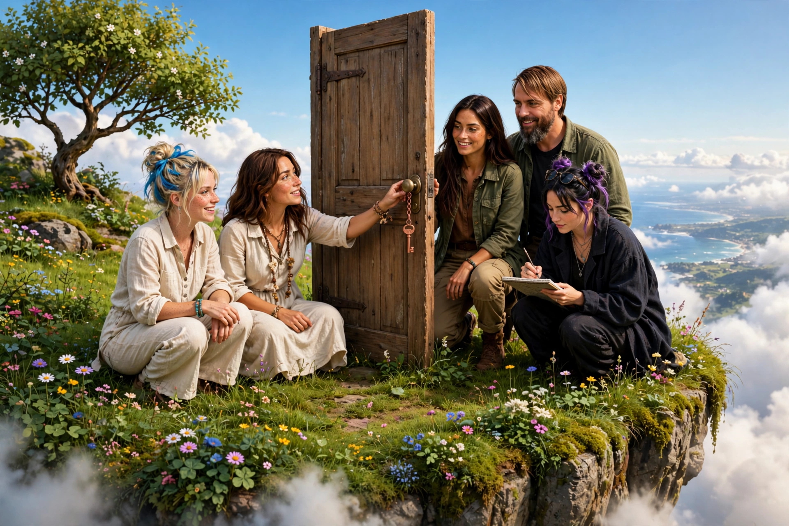
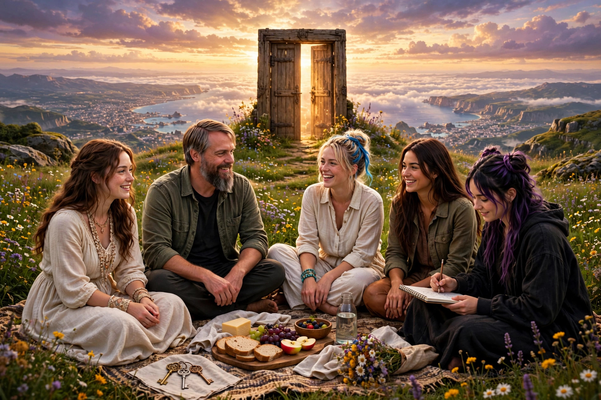

The Island in the Sky
Book Three of the 3DVR girls adventures
The brass key opened a door in the world. The silver key was never for a door at all. It was for the way up.
Book Three · a 3DVR girls adventure · Back to the girls

Book Three of the 3DVR girls adventures
The brass key opened a door in the world. The silver key was never for a door at all. It was for the way up.
They went back to the cliff door before sunrise, when the sky island drifts lowest over the sea. The garden muse put the silver key in the lock and turned it the other way, the way nobody had ever tried. The little door did not open out. It opened up. Stone by stone, a stairway of turquoise light unfolded into the sky, all the way to the island. Kayla put one boot on the first step and pressed. Solid as the cliff itself. “It holds,” she said. “Climb.”

Kayla led, because heights are just trails that went vertical. The blonde came next, humming to keep everyone's courage up, and the garden muse behind her with both keys on their cord. Muse climbed one-handed, sketching the coast as it shrank, because some views only happen once. Thomas brought up the rear the way keepers do, carrying the picnic basket and watching every step the way he watches over the garden. Halfway up, the whole crew stopped, hung in the bright air between the sea and the sky, and laughed just for the wonder of it.

The island was a meadow that had forgotten to fall: wildflowers, one kind old tree, and in the middle of it a wooden door standing upright with no wall, no house, nothing behind it but more sky. On its knob hung a copper key. The garden muse took it down gently, the way you take an egg from a nest. The blonde walked all the way around the door and came back shaking her head, delighted. “There is no other side,” she said. “Both sides are the front.” Muse drew it from the left and from the right, and the drawings matched, which is impossible, and she kept them both.

So they did the only sensible thing: they had the picnic above the world, with the whole coastline shining below them and the clouds for a second sea. Thomas poured tea and kept the map dry, keeper's work. Three keys lay on the blanket corner now: brass, silver, copper. Before they climbed down, the garden muse tried the copper key in the empty air at the island's edge, just to see. It turned. And far below, for one bright second, they all saw it: a staircase of green light going down, down, down under the waves. “The Undertow Library,” Kayla read off the map, going soft at the edges. “Next time,” said the muse, and pocketed the key.
The end of Book Three. Three keys hang by the garden gate now, and all three belong to the girls. The keeper keeps the tea warm and the gate oiled. Book Four: The Undertow Library, when the tide is right.